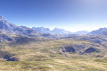

A Look into CGI
Prior to CGI being prevalent in film, virtual reality, personal computing, and gaming, one of the early practical applications of CGI was for aviation and military training namely, the flight simulator. Visual systems developed in flight simulators were also an important precursor to three-dimensional computer graphics and Computer Generated Imagery (CGI) systems today. Namely because the object of flight simulation was to reproduce on the ground the behavior of an aircraft in flight. Much of this reproduction had to do with believable visual synthesis that mimicked reality. Combined with the need to pair virtual synthesis with military-level training requirements, CGI technologies applied in flight simulation were often years ahead of what would have been available in commercial computing or even in high-budget film. Early CGI systems could depict only objects consisting of planar polygons. Advances in algorithms and electronics in flight simulator visual systems and CGI in the 1970s and 1980s influenced many technologies still used in modern CGI adding the ability to superimpose texture over the surfaces as well as transition imagery from one level of detail to the next one in a smooth manner.


Weather visualizations were the first application of CGI in television. It has now become common in weather casting to display full-motion video of images captured in real time from multiple cameras and other imaging devices. Coupled with 3D graphics symbols and mapped to a common virtual geospatial model, these animated visualizations constitute the first true application of CGI to TV. CGI has become common in sports telecasting. Sports and entertainment venues are provided with see-through and overlay content through tracked camera feeds for enhanced viewing by the audience. Examples include the yellow "first down" line seen in television broadcasts of American football games showing the line the offensive team must cross to receive a first down. CGI is also used in association with football and other sporting events to show commercial advertisements overlaid onto the view of the playing area. Sections of rugby fields and cricket pitches also display sponsored images. Swimming telecasts often add a line across the lanes to indicate the position of the current record holder as a race proceeds to allow viewers to compare the current race to the best performance. Other examples include hockey puck tracking and annotations of racing car performance and snooker ball trajectories.

Scenery generators are commonly used in movies, animations and video games. For example, Industrial Light & Magic used E-on Vue to create the fictional environments for Pirates of the Caribbean: Dead Man's Chest. In such live-action cases, a 3D model of the generated environment is rendered and blended with live-action footage. Scenery generated by the software may also be used to create completely computer-generated scenes. In the case of animated movies such as Kung Fu Panda, the raw generation is assisted by hand-painting to accentuate subtle details. Environment elements not commonly associated with landscapes, such as ocean waves have also been handled by the software. Scenery generation is used in most 3D-based video-games. These typically use either custom or purchased engines that contain their own scenery generators. For some games, they tend to use a procedurally generated terrain. These typically use a form of height mapping and use of Perlin noise. This will create a grid that with one point in a 2D coordinate will create the same heightmap as it is pseudo-random, meaning it will result in the same output with the same input. This can then easily be translated into the product 3D image. These can then be changed from the editor tools in most engines if the terrain will be custom built. With recent developments neural networks can be built to create or texture the terrain based on previously suggested artwork or heightmap data. These would be generated using algorithms that have been able to identify images and similarities between them. With the info the machine can take other heightmaps and render a very similar looking image to the style image. This can be used to create similar images in example a Studio Ghibli or Van Gogh art-style.
Motion capture (sometimes referred as mo-cap or mocap, for short) is the process of recording the movement of objects or people. It is used in military, entertainment, sports, medical applications, and for validation of computer vision and robots. In filmmaking and video game development, it refers to recording actions of human actors and using that information to animate digital character models in 2D or 3D computer animation. When it includes face and fingers or captures subtle expressions, it is often referred to as performance capture. In many fields, motion capture is sometimes called motion tracking, but in filmmaking and games, motion tracking usually refers more to match moving. In motion capture sessions, movements of one or more actors are sampled many times per second. Whereas early techniques used images from multiple cameras to calculate 3D positions, often the purpose of motion capture is to record only the movements of the actor, not their visual appearance. This animation data is mapped to a 3D model so that the model performs the same actions as the actor. This process may be contrasted with the older technique of rotoscoping. Camera movements can also be motion captured so that a virtual camera in the scene will pan, tilt or dolly around the stage driven by a camera operator while the actor is performing. At the same time, the motion capture system can capture the camera and props as well as the actor's performance. This allows the computer-generated characters, images and sets to have the same perspective as the video images from the camera. A computer processes the data and displays the movements of the actor, providing the desired camera positions in terms of objects in the set. Retroactively obtaining camera movement data from the captured footage is known as match moving or camera tracking. The first virtual actor animated by motion-capture was produced in 1993 by Didier Pourcel and his team at Gribouille. It involved "cloning" the body and face of French comedian Richard Bohringer, and then animating it with still-nascent motion-capture tools.
Virtual reality (VR) is a simulated experience that employs pose tracking and 3D near-eye displays to give the user an immersive feel of a virtual world. Applications of virtual reality include entertainment (particularly video games), education (such as medical or military training) and business (such as virtual meetings). Other distinct types of VR-style technology include augmented reality and mixed reality, sometimes referred to as extended reality or XR, although definitions are currently changing due to the nascence of the industry. Currently, standard virtual reality systems use either virtual reality headsets or multi-projected environments to generate some realistic images, sounds and other sensations that simulate a user's physical presence in a virtual environment. A person using virtual reality equipment is able to look around the artificial world, move around in it, and interact with virtual features or items. The effect is commonly created by VR headsets consisting of a head-mounted display with a small screen in front of the eyes, but can also be created through specially designed rooms with multiple large screens. Virtual reality typically incorporates auditory and video feedback, but may also allow other types of sensory and force feedback through haptic technology.

Modern virtual reality headset displays are based on technology developed for smartphones including gyroscopes and motion sensors for tracking head, body, and hand positions; small HD screens for stereoscopic displays; and small, lightweight, and fast computer processors. These components led to relative affordability for independent VR developers, and led to the 2012 Oculus Rift Kickstarter offering the first independently developed VR headset. Independent production of VR images and video has increased alongside the development of affordable omnidirectional cameras, also known as 360-degree cameras or VR cameras, that have the ability to record 360 interactive photography, although at relatively low resolutions or in highly compressed formats for online streaming of 360 video. In contrast, photogrammetry is increasingly used to combine several high-resolution photographs for the creation of detailed 3D objects and environments in VR applications. To create a feeling of immersion, special output devices are needed to display virtual worlds. Well-known formats include head-mounted displays or the CAVE. In order to convey a spatial impression, two images are generated and displayed from different perspectives (stereo projection). There are different technologies available to bring the respective image to the right eye. A distinction is made between active (e.g. shutter glasses) and passive technologies (e.g. polarizing filters or Infitec). In order to improve the feeling of immersion, wearable multi-string cables offer haptics to complex geometries in virtual reality. These strings offer fine control of each finger joint to simulate the haptics involved in touching these virtual geometries.

Special input devices are required for interaction with the virtual world. Some of the most common input devices are motion controllers and optical tracking sensors. In some cases, wired gloves are used. Controllers typically use optical tracking systems (primarily infrared cameras) for location and navigation, so that the user can move freely without wiring. Some input devices provide the user with force feedback to the hands or other parts of the body, so that the human being can orientate himself in the three-dimensional world through haptics and sensor technology as a further sensory sensation and carry out realistic simulations. This allows for the viewer to have a sense of direction in the artificial landscape. Additional haptic feedback can be obtained from omnidirectional treadmills (with which walking in virtual space is controlled by real walking movements) and vibration gloves and suits. Virtual reality cameras can be used to create VR photography using 360-degree panorama videos. 360-degree camera shots can be mixed with virtual elements to merge reality and fiction through special effects. Virtual reality cameras can be used as a stepping stone to make realistic holographic displays these cameras can be used to cover every angle of the needed experience. VR cameras are available in various formats, with varying numbers of lenses installed in the camera.
The Virtual Reality Modelling Language (VRML), first introduced in 1994, was intended for the development of "virtual worlds" without dependency on headsets. The Web3D consortium was subsequently founded in 1997 for the development of industry standards for web-based 3D graphics. The consortium subsequently developed X3D from the VRML framework as an archival, open-source standard for web-based distribution of VR content. WebVR is an experimental JavaScript application programming interface (API) that provides support for various virtual reality devices, such as the HTC Vive, Oculus Rift, Google Cardboard, or OSVR, in a web browser.

Augmented reality (AR) is an interactive experience that combines the real world and computer-generated content. The content can span multiple sensory modalities, including visual, auditory, haptic, somatosensory, and olfactory. AR can be defined as a system that incorporates three basic features: a combination of real and virtual worlds, real-time interaction, and accurate 3D registration of virtual and real objects. The overlaid sensory information can be constructive (i.e. additive to the natural environment), or destructive (i.e. masking of the natural environment). This experience is seamlessly interwoven with the physical world such that it is perceived as an immersive aspect of the real environment. In this way, augmented reality alters one's ongoing perception of a real-world environment, whereas virtual reality completely replaces the user's real-world environment with a simulated one.
Augmented reality is largely synonymous with mixed reality. There is also overlap in terminology between extended reality and computer-mediated reality.
The primary value of augmented reality is the manner in which components of the digital world blend into a person's perception of the real world, not as a simple display of data, but through the integration of immersive sensations, which are perceived as natural parts of an environment. The earliest functional AR systems that provided immersive mixed reality experiences for users were invented in the early 1990s, starting with the Virtual Fixtures system developed at the U.S. Air Force's Armstrong Laboratory in 1992. Commercial augmented reality experiences were first introduced in entertainment and gaming businesses. Subsequently, augmented reality applications have spanned commercial industries such as education, communications, medicine, and entertainment. In education, content may be accessed by scanning or viewing an image with a mobile device or by using markerless AR techniques.
Augmented reality is used to enhance natural environments or situations and offers perceptually enriched experiences. With the help of advanced AR technologies (e.g. adding computer vision, incorporating AR cameras into smartphone applications, and object recognition) the information about the surrounding real world of the user becomes interactive and digitally manipulated. Information about the environment and its objects is overlaid on the real world. This information can be virtual. Augmented Reality is any experience which is artificial and which adds to the already existing reality. or real, e.g. seeing other real sensed or measured information such as electromagnetic radio waves overlaid in exact alignment with where they actually are in space. Augmented reality also has a lot of potential in the gathering and sharing of tacit knowledge. Augmentation techniques are typically performed in real-time and in semantic contexts with environmental elements. Immersive perceptual information is sometimes combined with supplemental information like scores over a live video feed of a sporting event. This combines the benefits of both augmented reality technology and heads up display technology (HUD).
In virtual reality (VR), the users' perception of reality is completely based on virtual information. In augmented reality (AR) the user is provided with additional computer- generated information within the data collected from real life that enhances their perception of reality. For example, in architecture, VR can be used to create a walk-through simulation of the inside of a new building; and AR can be used to show a building's structures and systems super-imposed on a real-life view. Another example is through the use of utility applications. Some AR applications, such as Augment, enable users to apply digital objects into real environments, allowing businesses to use augmented reality devices as a way to preview their products in the real world. Similarly, it can also be used to demo what products may look like in an environment for customers, as demonstrated by companies such as Mountain Equipment Co-op or Lowe's who use augmented reality to allow customers to preview what their products might look like at home through the use of 3D models.
Augmented reality (AR) differs from virtual reality (VR) in the sense that in AR part of the surrounding environment is 'real' and AR is just adding layers of virtual objects to the real environment. On the other hand, in VR the surrounding environment is completely virtual and computer generated. A demonstration of how AR layers objects onto the real world can be seen with augmented reality games. WallaMe is an augmented reality game application that allows users to hide messages in real environments, utilizing geolocation technology in order to enable users to hide messages wherever they may wish in the world. Such applications have many uses in the world, including in activism and artistic expression.